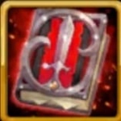
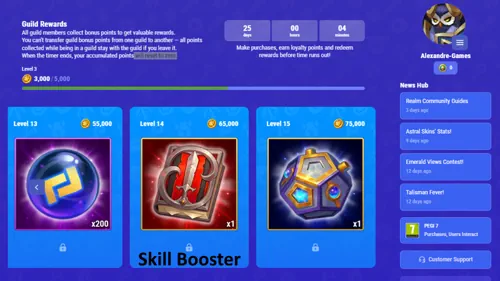

So verwendest du Booster-Buecher in Hero Wars Alliance
- Von: Alexandre Domingos. .
Wenn du Hero Wars Alliance schon eine Weile spielst, hast du wahrscheinlich andere Spieler ueber "Buecher" sprechen hoeren - also ueber die Gegenstaende, die du mit Global-Championship-Trophaeen kaufen kannst. Der offizielle Name lautet Booster, und es gibt drei Typen: EP-Booster, Faehigkeiten-Booster und Evolutions-Booster. Jeder von ihnen erfuellt einen anderen Zweck, und wenn du weisst, wann du sie einsetzen solltest (und wann NICHT), kannst du Tausende Trophaeen sparen.
In diesem Leitfaden gehe ich mit dir jeden Booster einzeln durch. Ich erklaere die Erstattungsformel in einfacher Sprache, zeige dir echte Situationen mit Zahlen und teile die Strategie, die ich persoenlich nutze, um aus jedem einzelnen Buch den maximalen Wert herauszuholen. Wenn du gerade erst anfaengst, keine Sorge - dieser Guide wurde fuer dich geschrieben.
Moechtest du diese Booster in Aktion sehen? Dann schau dir unten das komplette Video ueber die Hero Wars Booster an. Die schriftliche Erklaerung mit allen Berechnungen und Tipps geht direkt danach weiter.

▶ Dieses Video auf YouTube ansehen
Wo du Booster kaufen kannst
Alle drei Booster kosten jeweils 1.500 Global-Championship-Trophaeen. Du kaufst sie im Guild Championship Shop, der verfuegbar wird, nachdem deine Gilde an der Global Championship teilgenommen hat.
Hier ist der wichtige Punkt, den viele Anfaenger uebersehen: Wenn du bei dem Helden, den du verbessern willst, bereits Fortschritt hast, erstattet dir das Spiel einen Teil der Trophaeen zurueck in dein Inventar. Je naeher der Held am Maximum ist, desto mehr Trophaeen bekommst du zurueck. Genau das ist der Kern der Strategie, die ich dir unten erklaere.
Inhaltsverzeichnis
- Faehigkeiten-Booster - Der versteckte MVP
- Kostenloser Faehigkeiten-Booster ueber Hub-Store-Gildenbelohnungen
- Alexandres Recycling-Strategie fuer Trophaeen mit dem Faehigkeiten-Booster
- Evolutions-Booster - Der Soul-Stone-Sparer
- Tabelle zur Sternverstaerkung
- EP-Booster - Die schwaechste Option
- Fazit: Welchen Booster solltest du zuerst kaufen?

Faehigkeiten-Booster - Der versteckte MVP
Was er macht
Der Faehigkeiten-Booster verbessert alle freigeschalteten Faehigkeiten eines ausgewaehlten Helden bis zu seinem aktuellen Level-Limit. In Hero Wars Alliance gelten fuer Faehigkeiten diese Maximalstufen:
- 1. und 2. Faehigkeit: Stufe 120
- 3. Faehigkeit: Stufe 100
- 4. Faehigkeit: Stufe 80
Vielleicht fragst du dich: "Was ist, wenn ich einige Faehigkeiten des Helden bereits manuell verbessert habe?" Gute Frage - das Spiel berechnet, wie viel Gold du bereits ausgegeben hast, und gibt dir anteilig Trophaeen basierend auf der noch offenen Differenz zurueck.
Die Formel fuer die Trophaeenerstattung
Die Formel wirkt einschuechternd, aber vereinfacht bedeutet sie: Je mehr Gold du bereits fuer Faehigkeits-Upgrades ausgegeben hast, desto mehr Trophaeen bekommst du zurueck.
Formel:
Erstattung = (1.500 / 20.032.100) × (20.032.100 − (X − Y))
- 1.500 = der Booster-Preis in Trophaeen
- 20.032.100 = gesamtes Gold, das noetig ist, um jede Faehigkeit von null aus zu maximieren
- X = Gold, das noetig ist, um das aktuelle Level-Limit des Helden zu erreichen
- Y = Gold, das du bereits fuer die Faehigkeiten dieses Helden ausgegeben hast
Praxisbeispiel 1 - Anfaenger (Held mit niedrigem Level)
Stell dir vor, dein Galahad ist erst Stufe 6 und hat zwei freigeschaltete Faehigkeiten. Bisher hast du 200 Gold fuer seine Faehigkeiten ausgegeben. Um beide Faehigkeiten auf Stufe 6 zu bringen, benoetigt das Spiel insgesamt 10.000 Gold.
- X = 10,000
- Y = 200
Erstattung = (1.500 / 20.032.100) × (20.032.100 − 9.800) = ca. 1.499 Trophaeen zurueck
Auf Stufe 6 bekommst du also praktisch alle 1.500 Trophaeen zurueck, abgesehen von einer einzigen Trophäe. Klingt grossartig, oder? Aber der Booster hat deine Faehigkeiten nur von Stufe 1 auf Stufe 6 angehoben - also nahezu ohne echten Einfluss auf dein Team.
Praxisbeispiel 2 - Nahe am Maximum (die clevere Variante)
Stell dir jetzt einen Helden auf Stufe 120 mit allen vier freigeschalteten Faehigkeiten vor. Du hast bereits 19.800.000 Gold von den maximalen 20.032.100 ausgegeben und die Faehigkeiten fast ans Maximum gebracht.
- X = 20,032,100 (der Held hat das Limit von Stufe 120 erreicht)
- Y = 19,800,000 (du hast die meisten Faehigkeiten bereits manuell gelevelt)
Erstattung = (1.500 / 20.032.100) × (20.032.100 − 232.100) = ca. 1.483 Trophaeen zurueck
Du bekommst immer noch ca. 1.483 Trophaeen zurueck - also nur rund 17 Trophaeen Nettokosten, um die restlichen Faehigkeiten bis zum Maximum fertigzustellen. Genau das ist der Sweet Spot: Level deine Faehigkeiten manuell so weit wie moeglich hoch und verwende erst dann den Booster fuer den letzten Rest, um fast alle Trophaeen wiederzubekommen.
Alexandre Tipps: Die wichtigste Erkenntnis ist einfach: Verwende den Faehigkeiten-Booster niemals bei einem Helden mit niedrigem Level. Bring deinen Helden zuerst auf Stufe 120, levele dann jede Faehigkeit manuell so weit hoch, wie es dein Gold erlaubt, und nutze erst danach den Faehigkeiten-Booster fuer den Rest. So bekommst du fast jedes Mal nahezu 1.500 Trophaeen zurueck, die du sofort in einen Evolutions-Booster reinvestieren kannst - und der ist mit kostenlosen Ressourcen deutlich schwerer zu ersetzen.
Kostenloser Faehigkeiten-Booster ueber Hub-Store-Gildenbelohnungen

Was viele Spieler nicht wissen: Der Faehigkeiten-Booster ist auch im Hub Store im Bereich Guild Rewards erhaeltlich. So funktioniert es:
- Wenn Gildenmitglieder ueber den Hub einkaufen, sammelt die Gilde Bonuspunkte.
- Sobald die Gilde bestimmte Punkteschwellen erreicht, erhalten alle Mitglieder der Gilde die Belohnungen - einschliesslich eines kostenlosen Faehigkeiten-Boosters.
- Der Zaehler wird alle 30 Tage zurueckgesetzt. Wenn deine Gilde also aktiv ist und Mitglieder beitragen, kannst du jeden Monat ohne eigene Kosten einen zusaetzlichen Faehigkeiten-Booster erhalten.
- Die Punkte gehoeren der Gilde. Wenn du die Gilde verlaesst, bleibt dein angesammelter Fortschritt bei der alten Gilde zurueck.
Im Grunde ist das jeden Monat ein kostenloses Buch, das du in den oben erklaerten Trophaeen-Recycling-Kreislauf einspeisen kannst. Sprich mit deiner Gilde darueber - je mehr Mitglieder beitragen, desto schneller profitieren alle davon.
Unterstuetze den Blog im Hub Store
Der Hub Store (Web Shop) von Hero Wars Alliance bietet oft bessere Angebote als der In-App-Shop - spezielle Bundles, Bonus-Smaragde und exklusive Angebote, die ausserdem fuer den Guild-Rewards-Fortschritt deiner gesamten Gilde zaehlen.
Wenn du Smaragde, Energiepakete oder Bundles kaufen moechtest, kannst du diesen Blog ohne Zusatzkosten unterstuetzen, indem du vor dem Bezahlen den Creator Code aktivierst:
Creator Code: ALEXANDREGAMES
Du zahlst nichts extra, und es hilft dem Blog dabei, weiterhin taegliche Geschenke, Tier-Listen, Guides und Event-Updates zu bringen.
Alexandres Recycling-Strategie fuer Trophaeen mit dem Faehigkeiten-Booster
Das ist die Strategie, die ich persoenlich nutze und jedem Spieler empfehle, der mich nach Boostern fragt. Hier ist sie Schritt fuer Schritt:
- Waehle einen Helden, den du bereits taeglich nutzt (Arena, Guild War, Kampagne).
- Levele seine Faehigkeiten manuell so hoch wie moeglich - gib dein Gold aus, bis jede Faehigkeit nahe am aktuellen Level-Limit des Helden ist.
- Verwende den Faehigkeiten-Booster. Da du die manuelle Arbeit bereits erledigt hast, schliesst der Booster nur noch die kleine Restluecke. Du bekommst etwa 1.470 bis 1.499 Trophaeen zurueck.
- Kaufe mit diesen zurueckgewonnenen Trophaeen einen Evolutions-Booster.
- Nutze den Evolutions-Booster bei einem Meta-Helden, der das Stern-Upgrade am dringendsten braucht - idealerweise jemandem, dessen Soul Stones schwer zu farmen sind.
- Wiederhole den Zyklus jedes Mal, wenn du erneut 1.500 Trophaeen angesammelt hast.
Das Geniale an diesem Kreislauf: Du wandelst effektiv Gold (leicht zu bekommen) in Soul Stones (schwer zu bekommen) um, indem du das Erstattungssystem des Faehigkeiten-Boosters nutzt. Mit der Zeit bringst du so mehrere Helden deutlich schneller auf den Absoluten Stern als Spieler, die Booster blind kaufen.
Alexandre Tipps: Denk daran, dass das nur dann gut funktioniert, wenn du vorher Gold investierst, um die Faehigkeiten manuell zu leveln. Wenn du den Faehigkeiten-Booster bei einem Helden mit Basis-Faehigkeiten einsetzt, verschwendest du den Grossteil deiner Trophaeen. Geduld zahlt sich hier aus - erst Gold ausgeben, dann den Booster nutzen und danach das Evolutions-Buch holen.
Evolutions-Booster - Der Soul-Stone-Sparer
Was er macht
Der Evolutions-Booster erhoeht die Entwicklungsstufe eines Helden um genau einen Stern. Ueber den Absoluten Stern hinaus geht es nicht. Jede Nutzung verbraucht Werte im Umfang von bis zu 300 Soul Stones. Wenn fuer das Stern-Upgrade weniger als 300 Steine benoetigt werden, bekommst du Trophaeen zurueck.
Wichtig: Dieser Booster funktioniert nicht bei bestimmten kuerzlich veroeffentlichten Helden. Das Spiel zeigt dir in der Booster-Beschreibung an, welche Helden ausgeschlossen sind. Nach einiger Zeit hebt Nexters diese Einschraenkung in der Regel wieder auf.
Die Formel fuer die Trophaeenerstattung
Erstattung = (1.500 / 300) × (300 − (X − Y))
- 1.500 = Preis in Trophaeen
- 300 = maximale Anzahl an Soul Stones, die der Booster abdeckt
- X = Soul Stones, die fuer den naechsten Stern benoetigt werden
- Y = Soul Stones, die du fuer diesen Helden bereits besitzt
Praxisbeispiel 1 - Mittlerer Bereich (4★ auf 5★, mit einigen Steinen)
Du moechtest Galahad von 4 auf 5 Sterne entwickeln. Dafuer brauchst du 150 Soul Stones und hast bereits 25 davon gesammelt.
- X = 150
- Y = 25
Erstattung = 5 × (300 − 125) = 5 × 175 = 875 Trophaeen zurueck
Du hast 1.500 Trophaeen ausgegeben und 875 zurueckbekommen. Die Nettokosten lagen also bei 625 Trophaeen, um einen ganzen Stern aufzusteigen. Das ist ein starkes Geschaeft, besonders bei Meta-Helden, deren Soul Stones schwer zu farmen sind.
Praxisbeispiel 2 - Nahe am Maximum (5★ auf 6★, mit 280 Steinen)
Der Sprung von 5 auf 6 Sterne kostet 300 Soul Stones. Angenommen, du hast gespart und besitzt bereits 280 Steine.
- X = 300
- Y = 280
Erstattung = 5 × (300 − 20) = 5 × 280 = 1.400 Trophaeen zurueck
Deine Nettokosten: nur 100 Trophaeen fuer das letzte und teuerste Stern-Upgrade im Spiel. Und das Beste daran ist, dass die 280 Soul Stones, die du gesammelt hast, vom Booster verbraucht werden, statt verfallen zu sein - die Trophaeenerstattung beruecksichtigt sie automatisch.
Referenz zur Sternverstaerkung
| Sterne | Benoetigte Soul Stones | Goldkosten |
|---|---|---|
| 1★ | 10 | 10,000 |
| 2★ | 20 | 35,000 |
| 3★ | 50 | 120,000 |
| 4★ | 100 | 300,000 |
| 5★ | 150 | 800,000 |
| 6★ (Absolut) | 300 | 1,500,000 |
| Gesamt | 630 | 2,765,000 |
Alexandre Tipps: Bei Helden, die du jeden Tag nutzt - besonders bei Meta-Picks wie Julius, Kayla oder Guus - kann es Monate dauern, 150 oder 300 Soul Stones zu sparen. Der Evolutions-Booster ist mit Abstand das wertvollste Buch im Spiel.
Zusaetzlicher Vorteil: Die Nutzung des Evolutions-Boosters kostet ueberhaupt kein Gold. Normalerweise kann das Aufwerten von Sternen bis zu 1,5 Mio. Gold kosten, aber mit diesem Booster ueberspringst du diese Kosten komplett.
Nutze den oben erklaerten Trick mit dem Faehigkeiten-Booster, um deine Trophaeen zu recyceln und mehr Evolutions-Booster zu finanzieren, ohne zusaetzlich auszugeben. So bringen erfahrene Spieler so viele Helden auf den Absoluten Stern.
EP-Booster - Die schwaechste Option
Was er macht
Der EP-Booster erhoeht die Stufe eines Helden auf dein aktuelles Team-Level (mit einem Maximum von Stufe 120). Wenn der Held bereits ueber Stufe 1 ist oder du Team-Level 120 noch nicht erreicht hast, bekommst du einen Teil der Trophaeen zurueck.
Die Formel fuer die Trophaeenerstattung
Erstattung = (1.500 / 2.948.945) × (2.948.945 − (X − Y))
- 1.500 = Booster-Preis
- 2.948.945 = gesamte EP, die ein Held benoetigt, um Stufe 120 zu erreichen
- X = maximale EP, die dein aktuelles Team-Level erlaubt
- Y = EP, die der Held bereits besitzt
Praxisbeispiel 1 - Mittlerer Bereich (Stufe 30 -> 60)
Dein Galahad ist Stufe 30 mit 6.675 EP, und dein Team-Level ist 60. Auf Stufe 60 kann ein Held bis zu 174.094 EP besitzen.
- X = 174,094
- Y = 6,675
Erstattung = (1.500 / 2.948.945) × (2.948.945 − 167.419) = ca. 1.414 Trophaeen zurueck
Nettokosten: etwa 86 Trophaeen, um von Stufe 30 auf 60 zu springen. Klingt gut, aber hier kommt der Haken ...
Praxisbeispiel 2 - Nahe am Maximum (Stufe 115 -> 120)
Angenommen, der Held ist bereits Stufe 115 mit 2.600.000 EP. Dein Team ist Stufe 120.
- X = 2,948,945
- Y = 2,600,000
Erstattung = (1.500 / 2.948.945) × (2.948.945 − 348.945) = ca. 1.322 Trophaeen zurueck
Nettokosten: etwa 178 Trophaeen fuer 5 Heldenlevel. Du hast zwar mehr Level bekommen, aber netto mehr Trophaeen ausgegeben als im mittleren Beispiel. Das liegt daran, dass die EP-Kosten exponentiell steigen.
Warum sich der EP-Booster meistens nicht lohnt
Hier ist die ehrliche Wahrheit: Du kannst Helden auf viele andere Arten leveln. Tagesmissionen, Kampagnenkaempfe, Tower-Belohnungen und Event-Aufgaben geben alle EP-Traenke. Du kannst ausserdem waehrend Events Smaragde fuer Energie-Nachfuellungen ausgeben, die neben anderer Beute ebenfalls EP liefern.
Global-Championship-Trophaeen hingegen kommen nur aus der Global Championship selbst. Das macht sie deutlich wertvoller als EP, die dir taeglich aus vielen verschiedenen Quellen zufliessen. 1.500 seltene Trophaeen auszugeben, um etwas zu ueberspringen, das du kostenlos bekommen kannst, ist fast nie ein guter Tausch.
Das einzige Szenario, in dem es halbwegs Sinn ergibt, ist, wenn du fuer eine bevorstehende Guild War oder einen Arena-Push dringend einen brandneuen Helden auf Maximalstufe brauchst und ueberhaupt keine Traenke gespart hast. Selbst dann solltest du zweimal nachdenken.
Alexandre Tipps: Ich spiele Hero Wars seit Jahren und kann an einer Hand abzaehlen, wie oft der EP-Booster wirklich die richtige Wahl war. Wenn du dich nicht in einer kritischen Notsituation befindest, lass ihn komplett aus. Investiere diese Trophaeen stattdessen in Faehigkeiten-Booster oder Evolutions-Booster - du wirst dir spaeter danken, wenn dein Meta-Held schon 6 Sterne hat, waehrend andere Spieler noch Soul Stones farmen.
Fazit: Welchen Booster solltest du zuerst kaufen?
Nach Jahren des Spielens und Testens jeder Kombination ist das meine ehrliche Rangliste:
- Evolutions-Booster - Der unangefochtene Champion. Soul Stones sind die am schwersten zu farmende Ressource in Hero Wars, besonders fuer Meta-Helden wie Iris, Phobos, Dante, Fafnir und viele andere. Es gibt keine kostenlose Alternative zu Soul Stones - entweder du grindest sie langsam oder du nutzt dieses Buch. Der Sprung von 5★ auf 6★ Absoluter Stern kostet 300 Steine und kann Monate an Kampagnen-Farming dauern. Ein einziger Booster loest das sofort.
- Faehigkeiten-Booster - Extrem nuetzlich, aber hauptsaechlich als Trophaeen-Recycling-Werkzeug. Wenn du die Faehigkeiten zuerst manuell levelst, gibt dir dieser Booster fast alle Trophaeen zurueck, die du dann in Evolutions-Booster umleiten kannst. Nutze ihn regelmaessig.
- EP-Booster - Mit Abstand die schwaechste Option. EP gibt es aus zu vielen kostenlosen Quellen (Tagesmissionen, Kampagne, Tower, Events). Seltene Trophaeen fuer EP auszugeben, ist fast immer Verschwendung. Ziehe ihn nur in absoluten Notfaellen in Betracht.
Wenn du ein neuerer Spieler bist, solltest du dich am besten auf deine ersten fuenf Helden konzentrieren: Baue ein solides Hauptteam auf, nutze die Schleife mit dem Faehigkeiten-Booster, um Trophaeen zu sparen, und setze Evolutions-Booster ein, um deinen Haupt-Damage-Dealer und deinen Tank so schnell wie moeglich auf 6★ Absoluter Stern zu bringen. Allein das wird dein Arena-Ranking und dein taegliches Smaragd-Einkommen stark nach oben treiben.
Entdecke weitere Hero Wars Alliance Guides!


Hinterlasse deine Meinung!
War dieser Booster-Leitfaden hilfreich fuer dich? Hast du Fragen dazu, fuer welchen Helden du deinen Evolutions-Booster einsetzen solltest? Mach bei der Diskussion auf der Alexandre-Games-Blogseite mit - klicke einfach auf den Button unten, um loszulegen: